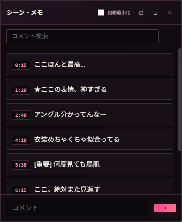

FANZA動画の再生位置を保存する方法
好きな場面を時刻付きメモで残す
「あの場面、どこだったっけ？」を、シークバーで探し直さないために。PC版Chromeで再生しながらメモを残し、あとからその位置へ戻る方法を紹介します。
FANZA動画の「作品」ではなく、動画内の位置を残す
作品をお気に入りに登録する機能と、一本の動画の中にある再生位置を記録する機能は用途が違います。神シーンメモでは、見返したい場面ごとに再生時刻と自分用の文章メモを保存します。
- PC版Google Chromeに拡張機能を追加して使います。
- FANZAの対象ブラウザ再生ページに対応しています。ページやプレーヤーの仕様によって使えない場合があります。
- 動画そのものを保存・ダウンロードする機能ではありません。
FANZAの作品お気に入りについてはFANZA公式ヘルプ ↗をご確認ください。
再生時刻とメモを保存する
- 拡張機能をChromeに追加するChrome Web Storeを使わず、配布ZIPを読み込む方式です。手順はLPの導入方法をご覧ください。
- 対応するFANZAの動画をブラウザで再生する動画を見ながら、残したい場面まで再生します。
- プレーヤー上の入力欄にメモを入れて保存する場面の内容があとで分かる短い言葉を入力し、追加ボタンを押します。そのときの再生位置と一緒に記録されます。

保存した場面へ戻る・区間をリピートする
同じ動画をもう一度開くと、保存したメモが一覧に表示されます。見返したいメモを選ぶと保存した再生位置へ移動します。メモの検索を使えば、言葉から場面を探せます。
区間を繰り返したい場合は、一覧から2つのメモをA（開始）とB（終了）に指定します。設定した範囲をプレーヤー上でリピートできます。
対象ページの全機能への対応を保証するものではありません。
DMM Player v2のチャプター機能との違い
DMM Player v2には、動画ファイルへのチャプター追加とチャプター間のABリピート機能があります。公式ヘルプでは動画ファイルを開いて使うPCプレーヤーとして案内されています。ファイルをDMM Player v2で再生している場合は、公式機能が選択肢になります。
神シーンメモは、対応するFANZAのブラウザー再生ページで使うChrome拡張です。動画ファイルは扱わず、文章メモと再生時刻をブラウザー内に保存します。DMM Player v2内で動作する機能ではありません。
保存場所とサイト計測
メモ本文は利用中のブラウザのローカル領域に保存され、開発者のサーバーへ送信されません。別の端末へ自動同期はしません。動画タイトルの補完やProのライセンス確認・購入では外部通信が発生します。
Cloudflare Web Analyticsが有効な場合、このLPとFANZAガイドのページ閲覧数・読み込み性能をCloudflareへ送って集計します。CloudflareはCookieを使わず、訪問者の個人データを収集・使用せず、同社の顧客サイト間で利用者を追跡しないと説明しています。拡張機能内のメモ本文、動画ID、動画タイトル、保存時刻、利用状況はこのサイト計測の対象外です。Cloudflare Web Analyticsのデータ説明 ↗
端末を移行する前や拡張機能を削除する前に、設定からJSONバックアップを書き出してください。移行先では同じ設定画面から復元できます。拡張機能をアンインストールすると、ブラウザ内の保存データも削除されます。
好きな場面に、
すぐ戻れるように。
神シーンメモは個人開発の非公式Chrome拡張です。対応環境と導入手順を確認してからお試しください。